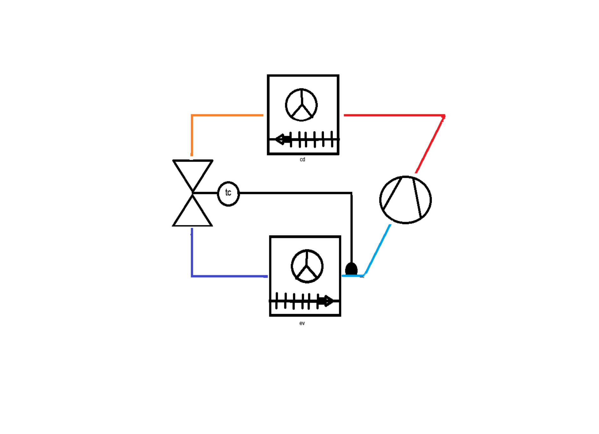

ÉTAPE 1 : Lis attentivement les pressions sur les 2 manomètres (échelle externe noire en bar). Puis déduis les températures correspondantes en suivant l'échelle R-134a sur le cadran intérieur. Reporte tes 4 lectures dans les cases ci-dessous.
Manomètres BP (gauche) & HP (droite) — fluide R-134a
Données — T° relevées au thermomètre de contact (à utiliser page 2)
| T asp ① (aspiration compresseur) | + ____ °C |
T Se ② (sortie évap. / bulbe) | + ____ °C |
| T Scd ③ (sortie condenseur) | + ____ °C |
T det ④ (entrée détendeur) | + ____ °C |
L'enseignant écrit les valeurs au crayon avant photocopie pour générer plusieurs sujets différents.
→ Tourne la page pour la suite (schéma + calculs SC/SR)
ÉTAPE 2 : Sur le schéma ci-dessous, place les 4 points ①②③④ aux endroits où placer le thermomètre. ÉTAPE 3 : Calcule les 4 grandeurs SC/SR à partir des lectures de la page 1 et des données T°. ÉTAPE 4 : Interprète.
Cycle frigorifique simplifié — place ①②③④ au crayon

①
T asp — aspiration comp.SC LOCALE = Tasp − T0
②
T Se — sortie évap. (bulbe)SC TOTALE = TSe − T0
③
T Scd — sortie condenseurSR LOCAL = TK − TScd
④
T det — entrée détendeurSR TOTAL = TK − Tdet
✎ Calculs SC et SR (en kelvin · attention aux signes)
| № | Formule | Détail du calcul | Résultat (K) | Plage normale ? |
|---|
| ① | SC locale = Tasp − T0 | | | |
| ② | SC totale = TSe − T0 | | | |
| ③ | SR local = TK − TScd | | | |
| ④ | SR total = TK − Tdet | | | |
Repères : SC locale 2-6 K · SC totale 5-10 K · SR local 3-8 K · SR total 3-8 K
✎ Interprétation — l'installation est-elle saine ? Que constates-tu entre SC locale et SC totale ?
Auto-éval · ☐ 4 points placés · ☐ Lectures manos · ☐ 4 calculs · ☐ Unités · ☐ Interprétation
Note enseignant Lectures (4) ___ · Placement (6) ___ · Calculs (6) ___ · Interp. (4) ___ = ___ / 20
Schéma corrigé — emplacement attendu des 4 points
①
T asp sur la ligne d'aspiration BP, juste avant l'entrée compresseur.
②
T Se en sortie d'évaporateur, à l'emplacement du bulbe thermostatique.
③
T Scd en sortie du condenseur, juste avant filtre/voyant.
④
T det sur la ligne liquide, juste avant l'entrée du détendeur.
Exemple de résultats attendus — sujet de référence (à adapter aux valeurs que tu écris au crayon)
| № | Formule | Application (ex.) | Résultat | Plage normale ? |
|---|
| ① | SC locale = Tasp − T0 | +4 − (−5) | +9 K | ✓ haute mais OK (2-6 normal) |
| ② | SC totale = TSe − T0 | +1 − (−5) | +6 K | ✓ normale (5-10) |
| ③ | SR local = TK − TScd | +40 − (+34) | +6 K | ✓ normal (3-8) |
| ④ | SR total = TK − Tdet | +40 − (+33) | +7 K | ✓ normal (3-8) |
Sujet de référence : P0 = 2,5 bar (T0 = −5 °C) · PK = 10 bar (TK = +40 °C) · Tasp = +4 °C · TSe = +1 °C · TScd = +34 °C · Tdet = +33 °C → installation saine. Note : les manomètres de la photo réelle pointent à des valeurs différentes (P0 ≈ 4 bar, PK ≈ 5 bar, équilibre à l'arrêt) — pour faire un cas pédagogique cohérent, modifie les T° au crayon en fonction des aiguilles que tu choisis.
Interprétation type (avec valeurs réalistes)
Installation saine. Toutes les valeurs sont dans les plages normales. SC totale < SC locale (6 K vs 9 K) : c'est normal, la ligne d'aspiration se réchauffe entre le bulbe et le compresseur (gain typique 2-5 K). Si l'écart dépasse 5-7 K, l'isolation de la ligne d'aspiration est suspecte. SR total ≥ SR local peut indiquer un refroidissement résiduel dans la ligne liquide. Inverse de SR total < SR local + écart important = filtre déshydrateur bouché.
CORRIGÉ Exercice manos + schéma · F. Henninot · LPP Jacques Raynaud · Avril 2026